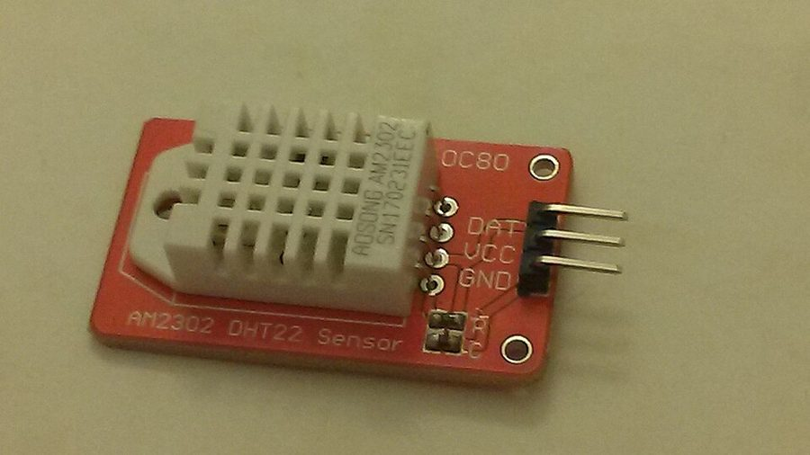

Sensores IoT e Industriais
Catálogo técnico digital para ajudar estudantes, clientes e profissionais a escolher sensores para projetos de Internet das Coisas e Automação Industrial com Arduino, ESP32, Raspberry Pi e CLPs.

O conceito de sensoriamento
Sensoriamento é o processo de converter uma grandeza física ou química do mundo real em um sinal elétrico interpretável por um sistema de controle. O elemento responsável por essa conversão é o transdutor, e o conjunto formado pelo transdutor mais o circuito de condicionamento de sinal constitui o que chamamos de sensor.
Toda grandeza de interesse em um processo produtivo — temperatura, pressão, nível, vazão, posição, presença, corrente elétrica, vibração, luminosidade — precisa ser traduzida para o domínio elétrico antes de poder ser monitorada, registrada ou usada em uma malha de controle. Sem sensoriamento não existe automação: um sistema que não consegue perceber o estado do processo só pode executar sequências cegas e pré-programadas.
Os sensores classificam-se conforme a natureza do sinal que entregam. Sensores analógicos produzem um sinal contínuo proporcional à grandeza medida, como o LM35, que gera 10 mV por grau Celsius. Sensores digitais entregam informação já discretizada, seja como nível lógico simples, como no sensor indutivo de proximidade, seja por protocolo serial estruturado, como o DS18B20 no barramento 1-Wire. Essa distinção determina o tipo de entrada necessária no controlador e a estratégia de tratamento do dado no firmware.
Transdutor
Elemento físico que converte a grandeza medida em uma variação elétrica: resistência, capacitância, tensão ou corrente. É a fronteira entre o mundo físico e o mundo elétrico.
Condicionamento
Circuito que amplifica, filtra, lineariza e adapta a impedância do sinal bruto, tornando-o compatível com a faixa de entrada do conversor analógico-digital do controlador.
Aquisição
Etapa em que o microcontrolador ou CLP digitaliza o sinal condicionado, aplica a escala de engenharia e disponibiliza o valor para a lógica de controle e para a rede de dados.
A importância dos sensores na automação
Os sensores são a camada perceptiva da planta: é por meio deles que qualquer estratégia de controle, segurança, qualidade ou manutenção se torna tecnicamente possível.
Controle de malha fechada
Sem realimentação não existe controle. Um controlador PID só consegue corrigir o erro entre o valor desejado e o valor real porque um sensor informa continuamente a variável de processo. A qualidade do controle nunca supera a qualidade da medição.
Segurança de máquinas e pessoas
Cortinas de luz, scanners a laser, chaves de posição e sensores de força constituem a base técnica das funções de segurança. Eles detectam a presença humana em zonas de risco e comandam paradas categorizadas conforme a IEC 60204-1.
Qualidade e rastreabilidade
Sensores de peso, dimensional, torque e visão verificam cada unidade produzida. Associados à identificação por RFID, permitem reconstruir todo o histórico de fabricação de um lote a partir do número de série do produto.
Manutenção preditiva
Sensores de vibração, corrente e temperatura monitoram a assinatura de funcionamento dos equipamentos. Desvios em relação à linha de base indicam desgaste em rolamentos, desbalanceamento ou falha de isolação antes que a quebra ocorra.
Eficiência energética
Medição de corrente, tensão, vazão e luminosidade permite quantificar o consumo por setor e por máquina, identificar cargas ociosas e dimensionar ações concretas de redução de custo operacional.
Flexibilidade produtiva
Em cenários de alto mix e baixo volume, sensores de identificação e de presença permitem que a mesma linha reconheça automaticamente o produto em processamento e carregue a receita correspondente.
Relação entre sensores, comunicação de dados e controle de processos
O dado gerado por um sensor percorre uma cadeia bem definida até se transformar em decisão operacional. Compreender essa cadeia é o que diferencia um projeto de automação de uma simples leitura isolada.
Protocolos de comunicação mais empregados
A escolha do protocolo depende da distância, do volume de dados, da criticidade temporal e da infraestrutura já existente na planta.
| Protocolo | Camada | Característica principal | Aplicação típica |
|---|---|---|---|
| I2C | Barramento local | Dois fios, até 128 dispositivos endereçáveis, curtas distâncias | Sensores em placa: BH1750, BMP280, acelerômetros |
| SPI | Barramento local | Full-duplex de alta velocidade, um sinal de seleção por dispositivo | Leitores RFID, cartões SD, conversores de alta taxa |
| UART | Serial ponto a ponto | Assíncrono, dois fios, simples de depurar | Módulos GPS, GSM e sensores com saída serial |
| 1-Wire | Barramento local | Um único fio de dados, endereço único de 64 bits por dispositivo | Redes de DS18B20 em medição distribuída de temperatura |
| 4 a 20 mA | Campo analógico | Imune à queda de tensão no cabo, detecta rompimento de fio | Transmissores industriais de pressão, nível e temperatura |
| Modbus RTU / TCP | Rede industrial | Padrão aberto, simples, amplamente suportado | Integração de inversores, medidores e CLPs |
| Profinet / EtherNet/IP | Ethernet industrial | Determinismo temporal, diagnóstico integrado | Células robóticas e linhas de produção de alta cadência |
| MQTT | Aplicação IoT | Publicação e assinatura, leve, tolerante a conexão instável | Telemetria de sensores para nuvem e painéis remotos |
| OPC UA | Aplicação industrial | Semântica padronizada, segurança nativa, independente de fabricante | Integração entre chão de fábrica, MES e ERP |
| LoRaWAN | Rede de longo alcance | Quilômetros de alcance com consumo muito baixo | Sensores autônomos em áreas externas e agricultura |
Arduino: conceito, funcionamento e programação
Conceito. O Arduino é uma plataforma aberta de prototipagem eletrônica composta por uma placa com microcontrolador, um ambiente de desenvolvimento integrado e um conjunto de bibliotecas que abstraem o acesso ao hardware.
Funcionamento. Todo programa possui duas funções obrigatórias: setup(), executada uma única vez na energização para configurar pinos e periféricos, e loop(), repetida indefinidamente, onde fica a lógica de leitura e atuação.
Programação. O código é escrito em uma variante simplificada de C++ e compilado pelo GCC AVR. O binário é gravado na memória flash por meio de um bootloader já presente na placa, dispensando gravador externo.

Cadastro dos sensores
Clique em um sensor para abrir a ficha técnica completa: categoria, conceito, princípio de funcionamento, especificações, tipo de sinal, aplicações, exemplo de projeto, imagem e fabricantes.